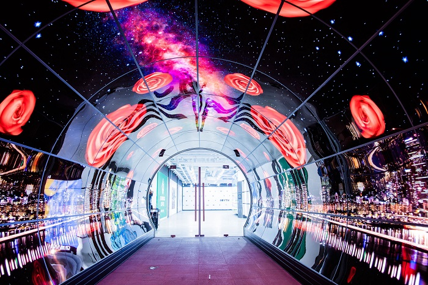
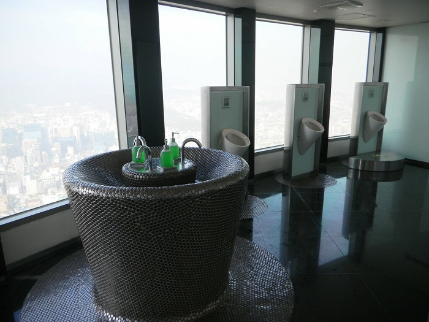

Du lịch Hàn Quốc
Welcome to Korea
Welcome to Korea
Nằm trên núi Namsan, tháp N Seoul là điểm cao thứ 2 ở Seoul với chiều cao là 236 mét, một nơi ngắm toàn cảnh Seoul đẹp lung linh khi lên đèn. Bức tranh tráng lệ của Seoul được nhìn ngắm từ tháp N Seoul là một mơ ước của nhiều khách du lịch. Ngoài ra, các cặp đôi yêu nhau cũng rất muốn một lần đến địa điểm du lịch Hàn Quốc này, khóa chiếc khóa tình yêu trên ngọn tháp, cầu mong sự thủy chung, gắn bó lâu bền.


Tháp Namsan hay còn được biết đến với tên gọi khác là tháp YTN Seoul Tower. Tuy nhiên thì nó vẫn hay được gọi là tháp Namsan hơn. Tòa tháp này được chính thức khởi công xây dựng vào năm 1969 và đến ngày 3.12.1971 thì nó được hoàn thành. Tổng kinh phí đầu tư để xây dựng tháp Namsan là khoảng 2,5 triệu USD. Ban đầu khi mới xây dựng xong thì tòa tháp này chỉ là một tòa tháp truyền hình rất bình thường và không được nhiều người chú ý đến. Tuy nhiên, từ năm 1975, chính phủ Hàn Quốc đã cho xây dựng cũng như phát triển thêm nhiều hạng mục du lịch hấp dẫn bên trong tòa tháp này và biến nó thành một trong những điểm đến thu hút đông khách du lịch nhất của thủ đô Seoul.
Tháp Namsan cao bao nhiêu? Nó có chiều cao là 236m và được xây dựng trên đỉnh núi Namsan có độ cao 243m so với mực nước biển. Với tổng độ cao là 479m so với mực nước biển thì tòa tháp này luôn là một điểm đến vô cùng lý tưởng cho những ai muốn ngắm nhìn thủ đô Seoul xinh đẹp từ trên cao. Theo thống kê thì mỗi năm có khoảng gần 9 triệu lượt khách đến tham quan tháp Namsan Seoul.
Nhìn chung các bạn có thể đến tham quan tháp Namsan Seoul vào bất cứ thời điểm nào trong năm cũng được. Tuy nhiên, để có thể thưởng ngoạn hết được khung cảnh tuyệt đẹp nơi đây bạn nên đi vào buổi chiều hoàng hôn hoặc buổi tối. Được chiêm ngưỡng vẻ đẹp lung linh và huyền ảo của thủ đô Seoul từ tháp Namsan chắc chắn sẽ là một trải nghiệm cực kỳ thú vị đấy.
Đầu tiên bạn đi tàu điện tuyến line 06 đến trạm Itaewon, đi ra ở cửa số 4 sau đó bắt tuyến bus số 03 màu xanh lá cây. Tuyến bus này hoạt động từ 8h sáng đến 23h hàng ngày với tần suất khoảng 10 phút/ 1 chuyến.
Ngoài ra, bạn có thể đi tàu điện line số 03 hoặc 04 đến ga Chungmuro, đi ra ở cửa sổ 2, sau đó bắt tuyến bus số 02 hoặc 05 để đến thẳng tháp N Seoul.
Bên cạnh xe bus, cáp treo cũng là một cách di chuyển đến tháp Namsan Seoul khá thú vị được nhiều du khách lựa chọn. Đầu tiên bạn phải bắt tuyến tàu điện số 04 đến ga Myeong-dong, đi ra ở cửa số 3, rẽ phải và đi bộ 5 phút sẽ thấy trạm cáp treo. Giờ hoạt động của cáp treo tháp Namsan từ 10h sáng đến 23h đêm. Giá vé 9500 won/ 1 vé người lớn và 6500 won/ 1 vé trẻ em.
Giờ mở cửa: Từ 10h sáng đến 23h đêm tất cả các ngày trong tuần.
Giá vé tham quan tháp Namsan Seoul:
Một trong những địa điểm mà bất cứ du khách nào khi đến tham quan tháp Namsan Seoul cũng không thể nào bỏ qua được đó chính là đài quan sát Namsan Tower. Tại đài quan sát này, du khách sẽ được ngắm nhìn toàn bộ khung cảnh thành phố Seoul từ trên cao với view 360 độ vô cùng thú vị. Khung cảnh tại tháp Namsan về đêm cũng cực kỳ ấn tượng, chắc chắn sẽ khiến bạn phải ngỡ ngàng đấy.
Hanbok là một loại quần áo truyền thống của đất nước Hàn Quốc và thường được mặc trong những dịp lễ, Tết hay những sự kiện truyền thống quan trọng trong năm. Nếu như bạn cũng muốn được một lần mặc trên mình những bộ Hanbok truyền thống độc đáo này thì có thể đến Trung tâm trải nghiệm văn hóa Hanbok tại lầu B1 của tòa tháp Namsan. Tại đây có đầy đủ các loại hanbok của vua chúa, hoàng hậu và quan quân của Hàn Quốc qua các thời kì để bạn có thể trải nghiệm. Đừng quên chụp cho mình những bức ảnh check-in độc đáo để làm kỷ niệm nhé.

Đến du lịch tháp Namsan bạn sẽ có cơ hội được khám phá những con đường rực rỡ màu sắc được trang trí bởi những màn hình OLED với đầy tính nghệ thuật. Ở mỗi tầng, mỗi đường hầm OLED lại có một chủ đề khác nhau vô cùng độc đáo và thú vị để chúng ta có thể khám phá.
Có một địa điểm vô cùng đặc biệt mà khi đến du lịch tháp Namsan bạn không nên bỏ qua đó chính là Sky Restroom. Đây được xem là nhà vệ sinh cao nhất tại Seoul. Xung quanh nhà vệ sinh là những bức tường bằng kính. Tuy nhiên bạn đừng lo vì kính ở đây là một loại kính đặc biệt mà những người ở ngoài sẽ không thể nhìn vào trong được. Được đi vệ sinh tại đây chắc chắn sẽ là một trải nghiệm có một không hai trong cuộc đời bạn đấy.
Tháp Namsan vốn được mệnh danh là tòa tháp của tình yêu. Và đến du lịch tháp Namsan thì bạn nhất định không được bỏ qua cơ hội được tham quan những ổ khóa tình yêu tháp Namsan. Đây là một cây cầu nằm ngay bên cạnh tháp Namsan và trên bức tường đó là hàng vạn chiếc cổ khóa. Mỗi chiếc ổ khóa tại đây tượng trưng cho một tình yêu vĩnh hằng mà một cặp đôi nào đó khi đến tham quan tháp đã để lại. Nếu bạn đi cùng với người thương của mình thì đừng quên móc lên đây một ổ khóa nhé. Người ta quan niệm rằng những cặp đôi nào khi đến đây và treo lên đây một chiếc ổ khóa có khắc tên hai người thì cặp đôi đó sẽ được mãi mãi hạnh phúc bên nhau.
Thông thường du khách đến tham quan tháp Namsan sẽ kết hợp luôn với một tour khám phá công viên Namsan. Đây là một công viên có khung cảnh tuyệt đẹp, với những cung đường trekking thú vị. Công viên Namsan cũng chính là công viên lớn nhất tại thành phố Seoul và mỗi ngày có khoảng 20 nghìn người đến tham quan công viên này.

GỢI Ý TOUR DU LỊCH HÀN QUỐC |
|---|
>> Du Lịch Hàn Quốc: Hà Nội – Seoul – Lotte World – Trượt Tuyết Jangjipine 5 Ngày Trượt Tuyết Bay Jeju Air chỉ với 12.500.000 đồng
|
Top 20 điểm tham quan nhất định phải ghé thăm trong hành trình chinh phục Seoul

Điện thoại: 0903357616
Email: thaontps24690@fpt.edu.vn